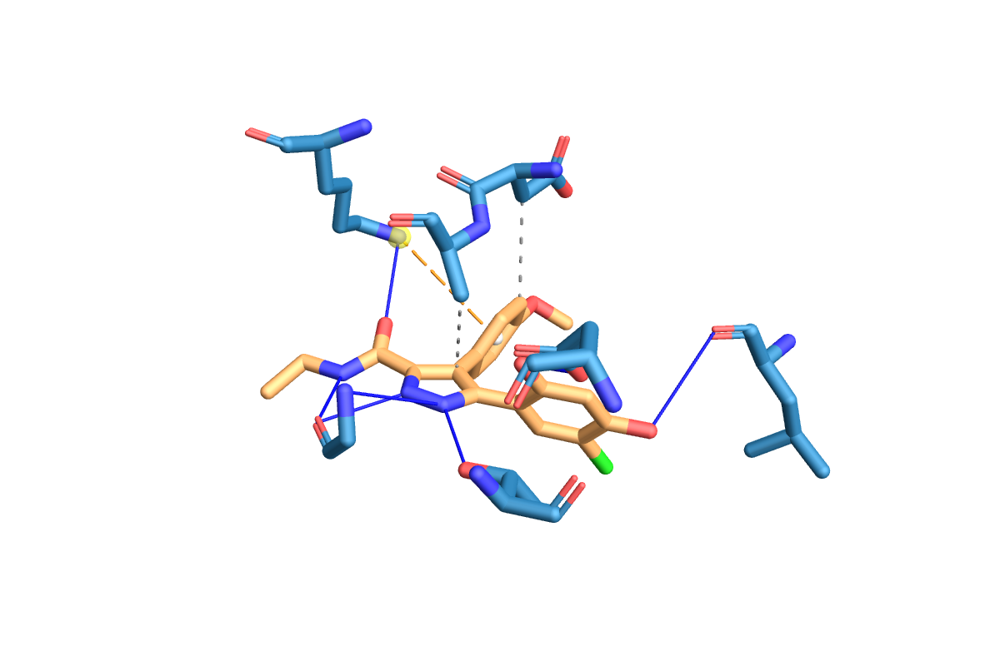

To use this website you need to get a protein as a pdb file and a ligand mol2 file as input.
You get the protein file by downloading of the Protein Data Bank as pdb file and the ligand mol2 file from the zinc database.
What they should look like is described in detail in here:
pdb
mol2
You can also specify the number of binding poses and the RMSD-cutoff.
The number of binding poses is the number of times there is attempted to dock. So if you lower the number the website
will run faster but the output will be worse. The number of binding poses is limited to 20, because anything higher
will take to long and is in a vast majority of cases unnecessary.
RMSD or Root mean square division is the measure of average distance between atoms of molecules and atoms of ligand configurations(Root-mean-square Deviation Of Atomic Positions, 2023).
It is measured in Ångström (Å).
Decreasing this value will give higher accuracy but the docking process will take longer
and higher values will give lower accuracy and a faster docking process.
As output you will get a dok file that houses all of the calculated binding poses and three images
of the three most optimal calculated binding poses. Those look like this:

The website takes your input (pdb and mol2 file) and runs it through an algorithm to simplify your file (lepro). after that step it runs the new file through an AI trained to dock ligands onto proteins called ledock. This can take a very long time depending on the number of binding poses specified. This is because the number is the amount of iterations the AI does. Each iteration the AI tries to put the ligand in the protein and if the pose works the AI calculates the score, and then it repeats this process. After all the outcomes are put in a file in decreasing order based on score. The website takes the top 3 scores and visualizes them using plip.
The history page is to retrace your steps. Every time you run the webtool the output gets saved to the history page. So if you accidentally delete one of the output files you can download it once again there.
1. Root-mean-square deviation of atomic positions. (2023, 11 december). Wikipedia. https://en.wikipedia.org/wiki/Root-mean-square_deviation_of_atomic_positions
2. Protein–Protein docking - Profacgen. (n.d.).https://www.profacgen.com/protein-protein-docking.htm